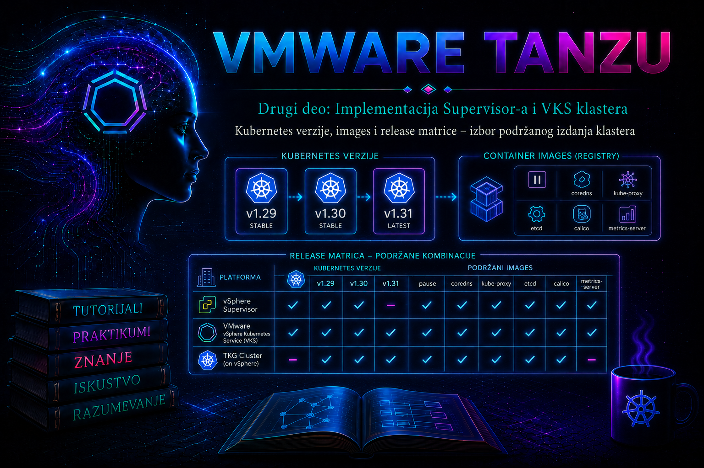

VMware & Tanzu

Kreiranje VKS klastera nije izbor proizvoljnog broja Kubernetes verzije. Administrator bira izdanje koje istovremeno mora biti dostupno u konkretnom Supervisor okruženju, kompatibilno sa instaliranom verzijom vSphere Kubernetes Service-a, povezano sa odgovarajućim i potpuno sinhronizovanim node image-om, podržano za željeni operativni sistem i prihvatljivo za aplikacije, dodatke i bezbednosnu politiku organizacije. Zato pitanje „koju verziju želimo?” u produkciji mora postati pitanje „koju verziju ova platforma može pouzdano da isporuči, održava i nadogradi?”.
U prethodnim lekcijama deklarativna specifikacija VKS klastera povezana je sa Cluster API kontrolerima i reconciliation petljom. Ova lekcija objašnjava šta se nalazi iza polja spec.topology.version, kako Supervisor razrešava Kubernetes release i VM image, kako se čita release matrica i kako se odluka dokumentuje pre kreiranja ili nadogradnje klastera. Sama promena verzije i kontrolisani rolling upgrade biće obrađeni u narednim lifecycle lekcijama; ovde je fokus na izboru, dokazivanju kompatibilnosti i pripremi bezbedne promene.
23.1. Četiri različita pojma koja se ne smeju pomešati
| Pojam | Šta označava | Zašto je važan |
|---|---|---|
| Upstream Kubernetes verzija | Semantičku verziju projekta Kubernetes, na primer v1.33.6. |
Određuje Kubernetes API-je, feature gates, version-skew pravila i upstream period održavanja. |
| VMware Kubernetes release | VMware-ovo testirano i podržano izdanje zasnovano na određenom upstream patch nivou, sa sopstvenim build/release sufiksom. | Dve oznake sa istim upstream delom nisu nužno isti proizvodni build niti imaju isti status kompatibilnosti. |
| Node image | Virtuelni mašinski image za control-plane i worker čvorove: operativni sistem, container runtime, kubelet i ostale platformom određene komponente. | Kubernetes release bez odgovarajućeg kompatibilnog image-a nije dovoljan za kreiranje ili upgrade čvorova. |
| Release/interop matrica | Zvanično podržana veza između vCenter/VCF i Supervisor nivoa, verzije VKS servisa, Kubernetes release-a, node OS-a i drugih zavisnosti. | Objekat koji je vidljiv u API-ju može biti nedostupan, nekompatibilan ili nepodržan za konkretan klaster. |
Reč image u ovoj temi znači prvenstveno VM node image koji platforma koristi da napravi Kubernetes čvor. To nije isto što i OCI container image aplikacije, niti isto što i pojedinačni image kontrolne komponente iz registra registry.k8s.io. VKS upravlja celom, testiranom kombinacijom komponenti; administrator ne treba da zamenjuje pojedinačne control-plane images kao da održava ručno kreiran kubeadm klaster.
23.2. Terminologija kroz generacije platforme: TKr, KR, VKr i OSImage
Nazivi resursa zavise od generacije vSphere/VCF i VKS servisa. U dokumentaciji i postojećim okruženjima često se sreće Tanzu Kubernetes Release (TKr): potpisana i podržana VMware distribucija Kubernetes softvera, isporučena zajedno sa odgovarajućim VM template-om kroz vSphere Content Library. U novijim VKS izdanjima dokumentacija, API objekti i poruke kontrolera mogu koristiti razdvojene pojmove Kubernetes Release (KR), VMware Kubernetes Release (VKr) i OSImage. Tačan API group, kind, label i format imena nisu univerzalni za sve verzije.
kubectl get tkr, kubectl get kr, kubectl get vkr ili upit nad OS image resursima mogu se razlikovati ili neke od njih mogu izostati.
Razdvajanje release metadata i OS image-a omogućava precizniji izbor operativnog sistema i arhitekture, ali uvodi važnu obavezu: resolver mora pronaći tačno jedan image kompatibilan sa ciljnom verzijom i kriterijumima klastera. Ako ne pronađe nijedan, promena se odbija. Ako pronađe više ravnopravnih kandidata, admission webhook takođe može odbiti promenu da ne bi proizvoljno izabrao pogrešan OS.
23.3. Kako platforma razrešava željenu verziju
- Administrator u manifestu navodi podržanu vrednost verzije, najčešće u
spec.topology.version, ili bira ponuđeno izdanje kroz vSphere Client. - Admission i release-resolver komponente proveravaju format, dostupnost, kompatibilnost sa VKS servisom i dozvoljeni upgrade put.
- Resolver povezuje release sa kompatibilnim OS/VM image-om iz Content Library-ja i sa kriterijumima kao što su OS naziv, OS verzija i arhitektura.
- Cluster API kreira ili menja Machine objekte; odgovarajući infrastructure provider klonira VM-ove iz odabranog image-a.
- Kontroleri prate bootstrap, registraciju čvorova, health i dostizanje željenog stanja. Tek
Readystatus klastera i čvorova potvrđuje operativni uspeh.
Zbog ovog toka postojanje template-a u Content Library-ju nije dokaz da se može koristiti. Isto tako, prikaz release objekta nije dovoljan dokaz da je dostupan za svaki namespace ili postojeći klaster. Potrebno je potvrditi najmanje tri ravni: objekat postoji, objekat je kompatibilan i postoji jednoznačan odgovarajući image.
23.4. Release matrica kao ugovor o podršci
Release matrica nije samo informativna lista. Ona predstavlja podržani presek više lifecycle-ova koji se razvijaju različitim tempom. Upstream Kubernetes objavljuje minor izdanja i održava ih ograničeno vreme; Broadcom/VMware zatim testira konkretne patch/build kombinacije sa VKS servisom i Supervisor platformom; node OS image ima sopstvene zakrpe i životni ciklus; CNI, CSI, CPI i ostale integracije moraju ostati kompatibilne. Zato „najnoviji upstream Kubernetes” nije automatski „najnoviji dostupan VKS release”.
| Sloj odluke | Dokaz koji se proverava | Posledica ignorisanja |
|---|---|---|
| vCenter/VCF i Supervisor | Zvanična produktna interoperability matrica i Supervisor release notes. | VKS servis ili release nije podržan na instaliranoj platformi. |
| VKS servis | VKS release notes, poznati problemi i lista podržanih Kubernetes izdanja. | Release može biti nepoznat resolveru ili blokiran admission proverom. |
| Kubernetes release | Tačan vendor build, status kompatibilnosti, podržani upgrade predecessor i datum podrške. | Nepodržan skok, propuštena bezbednosna zakrpa ili slepa lifecycle ulica. |
| Node OS/image | Kompatibilan image, OS naziv/verzija, arhitektura i potpuna sinhronizacija biblioteke. | Missing compatible KR/OSImage ili Multiple OSImages Resolved. |
| Aplikacije i platformski dodaci | Podržani API nivoi za ingress, CSI, policy engine, backup, observability i vendor workload. | Uklonjen API, neuspešan admission, backup ili runtime kvar posle upgrade-a. |
Matrica se čita za tačne build brojeve, ne samo za marketinške nazive „vSphere 8” ili „VCF 9”. Ako je ćelija prazna, to nije dozvola za eksperiment u produkciji. Ako kombinacija tehnički radi, ali nije navedena kao podržana, organizacija preuzima rizik incidenta i mogućeg ograničenja proizvođačke podrške.
23.5. Verzija nije samo broj: semantička oznaka i vendor sufiks
Oznaka poput v1.33.6+vmware.1-fips-vkr.1 može da sadrži upstream major, minor i patch deo, VMware build/reviziju, oznaku varijante kao što je FIPS i generaciju release paketa. Konkretan format se menja između izdanja; zato se puna vrednost kopira iz API-ja ili zvanične ponude platforme, bez ručnog „pogađanja” sufiksa. Za poređenje funkcionalnosti važan je upstream deo, ali za podršku i image resolution važna je cela oznaka.
- Major promena je retka i predstavlja veliku kompatibilnosnu granicu.
- Minor izdanje, na primer prelazak sa 1.32 na 1.33, donosi funkcije, deprecations i moguće uklanjanje API-ja; zahteva planirani upgrade put.
- Patch izdanje pretežno donosi ispravke i bezbednosne zakrpe, ali je i dalje zaseban vendor-testiran artefakt.
- Vendor/build sufiks razlikuje VMware pakovanje i njegove revizije; ne sme se odbaciti pri unosu verzije.
23.6. Upstream podrška, version skew i vendor podrška
Kubernetes projekat trenutno održava tri najnovija minor izdanja, ali se tačan skup menja sa svakim novim izdanjem. Verzija koja je dostigla upstream end-of-life više ne dobija upstream bezbednosne i bug-fix zakrpe. VMware podrška ima sopstveni kalendar i mora se proveriti zasebno: upstream podržanost ne garantuje da je release već dostupan u VKS-u, a prisutan stariji vendor image ne znači da je i dalje u punoj podršci.
Upstream version-skew pravila određuju dozvoljene razlike između kube-apiserver, kubelet, kube-proxy i kubectl. Od Kubernetes 1.28, kubelet i kube-proxy u odgovarajućim uslovima mogu biti do tri minor verzije stariji od kube-apiserver-a, ali to pravilo opisuje tehnički dozvoljen skew tokom rada i nadogradnje; ono nije dozvola da se preskoči VKS-ov podržani upgrade put. U HA control plane-u dodatno važi da najnoviji kube-apiserver utiče na dozvoljeni opseg ostalih komponenti.
kubectl koji je najviše jednu minor verziju stariji ili noviji od kube-apiserver-a, ali se za sve cluster komponente oslanjaj na VKS lifecycle kontrolere i njihov podržani redosled. Ne pokušavaj ručno da „ispraviš” skew zamenom binarnih datoteka unutar VKS čvora.
23.7. Content Library i lanac isporuke node image-a
U vSphere 7 i delu vSphere 8/TKG Service implementacija, Tanzu Kubernetes releases distribuirani su preko subscribed ili local Content Library-ja. Online okruženje zahteva ispravne DNS, NTP, proxy/firewall i TLS uslove da vCenter preuzme metapodatke i sadržaj. Air-gapped okruženje koristi kontrolisani offline prenos u lokalnu biblioteku. Novije VKS generacije menjaju naziv i način prikaza release artefakata, ali osnovni operativni zahtev ostaje: platforma mora imati verifikovan, potpun i kompatibilan VM image pre kreiranja ili zamene čvora.
Sinhronizacija metapodataka bez preuzetog kompletnog OVF/OVA sadržaja nije dovoljna. On-demand preuzimanje štedi prostor, ali produžava prvi provisioning i uvodi zavisnost od spoljne dostupnosti baš u trenutku incidenta ili scale-out-a. U produkciji je razumno unapred preuzeti odobrene image-e i proveriti ih pre change window-a. Storage kapacitet biblioteke, mrežna propusnost i vreme prenosa postaju deo readiness provere.
23.8. Online, air-gapped i kontrolisani enterprise model
| Model | Prednost | Rizik i kontrola |
|---|---|---|
| Subscribed library / online katalog | Jednostavnije otkrivanje novih podržanih izdanja. | Kontrolišite egress, sertifikate, proxy i raspored sinhronizacije; novi artefakt ne treba automatski proglasiti produkciono odobrenim. |
| Local library / air-gapped | Potpuna kontrola unosa artefakata i rada bez interneta. | Ručni proces mora obuhvatiti poreklo, checksum/potpis gde je dostupan, kompletan upload, dokumentovanje i blagovremeno osvežavanje. |
| Promocija dev → test → prod | Release se funkcionalno i operativno verifikuje pre produkcije. | Matrice i image identitet moraju ostati sledljivi; „isti minor” nije dokaz da je promovisan isti build. |
23.9. Politika izbora verzije za produkciju
Dobra politika ne bira automatski ni najnoviju ni najstariju dostupnu verziju. Najnoviji release može sadržati potrebnu bezbednosnu zakrpu, ali i nov poznati problem; najstariji podržani release smanjuje vreme do obavezne sledeće nadogradnje. Uobičajen enterprise izbor je najnoviji dovoljno stabilizovan patch u odobrenom minor izdanju, nakon pregleda release notes, poznatih problema i rezultata internog testiranja.
- Popiši tačne verzije vCenter/VCF, Supervisor-a i VKS servisa.
- Iz zvanične matrice izdvoji samo podržane release-e za taj presek.
- Eliminiši EOL izdanja i ona koja nemaju dovoljan preostali support runway.
- Proveri da li postoji kompatibilan i potpuno dostupan node image za odabrani OS.
- Proveri upgrade put sa postojeće verzije; pretpostavi sekvencijalni minor upgrade dok dokumentacija eksplicitno ne potvrdi drugačije.
- Testiraj workload API-je, admission politike, CSI/CNI, ingress, monitoring i backup/restore.
- Dokumentuj odluku, izuzetke, vlasnika, datum preispitivanja i sledeći planirani upgrade prozor.
23.10. Pre-flight inventar: read-only komande
Sledeće komande izvršavaju se sa administrativne radne stanice, u ispravnom Supervisor kontekstu i namespace-u. One čitaju stanje i bezbedne su za produkciju, ali rezultat može zavisiti od RBAC privilegija. Najpre sačuvaj dokaz o kontekstu da ne bi analizirao pogrešan klaster.
kubectl config current-context
kubectl config get-contexts
kubectl cluster-info
kubectl versionPošto se nazivi release resursa menjaju, prvo ih otkrij, umesto da pretpostaviš API kind. Filter je read-only i traži resurse čiji naziv sadrži karakteristične termine.
kubectl api-resources | grep -Ei 'kubernetesrelease|osimage|tkr|vkr|(^|[[:space:]])kr([[:space:]]|$)'
# Primeri koji se koriste samo ako ih prethodna komanda potvrdi:
kubectl get tkr
kubectl get kr
kubectl get vkr
kubectl get osimages
kubectl get sa skraćenim nazivom može vratiti grešku „resource type not found”; to ne dokazuje kvar platforme, već često samo razliku API generacije. Upotrebi puno ime iz kolone NAME i proveri resurs pomoću kubectl explain ili kubectl get ... -o yaml. Ne oslanjaj se na kolone podrazumevanog tabelarnog prikaza ako status kompatibilnosti postoji samo u labelama, anotacijama ili status.conditions.
kubectl get <release-resource> <release-name> -o yaml
kubectl describe <release-resource> <release-name>
kubectl get cluster -n <namespace>
kubectl get cluster <cluster-name> -n <namespace> -o yaml
kubectl get machines -n <namespace> -o wide< i > je placeholder i mora se zameniti stvarnom vrednošću. Nemoj izvršavati state-changing komande dok current-context, namespace i ime klastera nisu nezavisno potvrđeni.
23.11. Čitanje manifesta bez vezivanja za jednu API generaciju
ClusterClass zasnovan VKS manifest tipično koristi sledeću semantiku. Tačni apiVersion, kind, class ime, varijable i puna release oznaka moraju se uzeti iz dokumentacije i API-ja konkretnog okruženja. Sledeći isečak je didaktički obrazac, a ne univerzalni manifest spreman za primenu.
apiVersion: cluster.x-k8s.io/v1beta1
kind: Cluster
metadata:
name: app-prod-01
namespace: team-app
spec:
topology:
class: <cluster-class-name>
version: <full-supported-release-string>
controlPlane:
replicas: 3
workers:
machineDeployments:
- class: node-pool
name: workers
replicas: 3Verzija se ne validira samo sintaksno. Webhook i resolver proveravaju da li je release dozvoljen, da li odgovara ClusterClass-u i da li postoji kompatibilan image. OS kriterijumi se, kada ih konkretna VKS verzija podržava, izražavaju kroz dokumentovane varijable ili anotacije. Ne izmišljaj annotation ključ: pogrešan ili preširok filter može dovesti do nula ili više kandidata.
23.12. Aplikaciona kompatibilnost i uklonjeni API-ji
Platformska matrica potvrđuje da VMware podržava kombinaciju infrastrukturnih komponenti; ona ne potvrđuje da će svaka korisnička aplikacija raditi. Pre promene minor verzije inventariši sve API-je koje koriste manifesti, Helm chart-ovi, operatori, admission webhook-ovi i automatizacija. Posebno proveri deprecated API-je koji se uklanjaju u ciljnom izdanju, kao i promene podrazumevanih feature gates i Pod Security ponašanja.
kubectl api-versions
kubectl get --raw='/version'
kubectl get validatingwebhookconfigurations,mutatingwebhookconfigurations
kubectl get crd
kubectl get storageclass
kubectl get csidriversOve komande daju inventar, ali ne zamenjuju analizu deklarativnih repozitorijuma i audit podataka. U testnom klasteru primeni reprezentativne manifeste server-side dry-run postupkom kada ga resurs i webhook podržavaju:
kubectl apply --server-side --dry-run=server -f <manifest-directory>Dry-run ne dokazuje runtime ponašanje, storage migraciju niti uspešan restore. Kritične aplikacije moraju proći funkcionalni test, restart/eviction test i backup/restore probu na ciljnoj verziji.
23.13. Bezbednost i supply-chain odgovornost
Podržani vendor image smanjuje rizik nekontrolisane kombinacije paketa, ali ne ukida obavezu organizacije da prati CVE obaveštenja i pravovremeno prelazi na ispravljeni release. Nikada ne menjaj ručno pakete, kubelet, container runtime ili sistemske konfiguracije unutar managed VKS node-a ako to nije izričito podržano; reconciliation ili zamena Machine-a može poništiti promenu, a podrška postaje nejasna.
- Ograniči ko može da menja
spec.topology.version, release katalog i Content Library. - Čuvaj audit trag: ko je odobrio build, iz koje matrice, kada i sa kojim test dokazima.
- Za offline unos proveri poreklo, integritet i odobreni transport artefakta.
- Ne mešaj FIPS i non-FIPS varijante bez provere celog podržanog lanca i zahteva aplikacija.
- Ne koristi floating ili neprecizne verzijske oznake u GitOps specifikaciji klastera.
23.14. Uticaj izbora na dostupnost, performanse i oporavak
Kreiranje klastera zahteva dostupnost image skladišta, dok upgrade zahteva dodatni CPU, memoriju, storage i IP adrese za privremene zamenske VM-ove. Ako kapacitet postoji samo za trenutno stanje, rolling replacement može stati na pola. PodDisruptionBudget, broj replika, anti-affinity i topology spread pravila određuju da li aplikacija ostaje dostupna dok se node pool menja. Sporo preuzimanje image-a produžava vreme oporavka i povećava period mešovitih verzija.
Rollback nije vraćanje snapshot-a pojedinačnog Kubernetes čvora. Managed čvorovi su potrošni resursi, a podržan downgrade Kubernetes klastera najčešće nije opšti mehanizam oporavka. Pre minor upgrade-a obezbedi aplikacioni backup, proverenu restore proceduru i, za kritične promene, strategiju paralelnog klastera ili ponovne izgradnje na prethodno odobrenom release-u. Tačna podrška za downgrade ili rollback mora se potvrditi u dokumentaciji konkretnog izdanja.
23.15. Praktikum – izbor i dokazivanje podržanog VKS izdanja
Cilj: formirati proverljiv release kandidat za novi laboratorijski VKS klaster, potvrditi njegovu kompatibilnost i image dostupnost, simulirati tipične greške bez ugrožavanja produkcije i pripremiti change zapis. Praktikum ne izvodi stvarni produkcioni upgrade.
Topologija: jedan zdrav Supervisor; namespace team-lab; administrativna Linux radna stanica sa kubectl; postojeći mali laboratorijski VKS klaster vks-release-lab ili odobren manifest za njegovo kreiranje; vCenter Content Library ili noviji ekvivalent release/image kataloga.
Preduslovi i privilegije: read pristup vCenter inventaru, VKS/Supervisor release podacima i Content Library statusu; Kubernetes pravo čitanja release, Cluster i Machine resursa u laboratorijskom namespace-u; pravo izmene samo nad laboratorijskim klasterom ako se izvodi opcioni dry-run. Supervisor i svi postojeći čvorovi moraju biti zdravi. Sačuvaj početni manifest u version control-u i zabeleži trenutno vreme, kontekst i vlasnika promene.
Procena rizika: koraci inventara su read-only. GUI sinhronizacija biblioteke menja stanje i može pokrenuti veliki prenos; izvodi se samo uz proveru kapaciteta i mrežnog prozora. Promena verzije Cluster objekta pokreće lifecycle operaciju i nije deo osnovne vežbe.
Vežba 1 – identitet platforme i početno stanje
- U vSphere Client-u otvori Workload Management i zabeleži tačan Supervisor i VKS service build/status. Naziv menija može se razlikovati između vSphere/VCF izdanja.
- Potvrdi Kubernetes kontekst i server/client verziju.
- Izvezi read-only snimak postojećeg Cluster i Machine stanja.
kubectl config current-context
kubectl version
kubectl get cluster -n team-lab -o wide
kubectl get machines -n team-lab -o wide
kubectl get events -n team-lab --sort-by=.metadata.creationTimestampOčekivani rezultat: kontekst pripada očekivanom Supervisor-u; VKS servis i Supervisor su zdravi; postojeći klaster nema neuspešne Machine objekte ili aktivan upgrade. Ako identitet ili health nisu potvrđeni, praktikum se prekida bez promena.
Vežba 2 – otkrivanje stvarnog release API-ja
kubectl api-resources | grep -Ei 'kubernetesrelease|osimage|tkr|vkr|(^|[[:space:]])kr([[:space:]]|$)'
kubectl get crd | grep -Ei 'release|osimage'
kubectl get cluster vks-release-lab -n team-lab -o jsonpath='{.spec.topology.version}{"\n"}'Na osnovu rezultata odredi puno ime release i OS image resursa. Zatim prikaži njihove detalje; primer ispod zahteva zamenu placeholder-a.
kubectl get <release-resource> -o wide
kubectl get <release-resource> <candidate-release> -o yaml
kubectl get <osimage-resource> -o wide
Validacija: kandidat ima status/condition koji konkretna dokumentacija tumači kao kompatibilan i dostupan; puna oznaka je sačuvana bez skraćivanja; pronađen je odgovarajući OS image. Sačuvaj -o yaml izlaz kao dokaz u change dokumentaciji, vodeći računa da ne objaviš poverljive anotacije ili interne adrese.
Vežba 3 – provera Content Library-ja i release matrice
- U vSphere Client-u pronađi Content Library povezanu sa Supervisor/VKS okruženjem.
- Proveri poslednju uspešnu sinhronizaciju, subscription status, dostupnost konkretnog library item-a i da li je sadržaj preuzet u celosti.
- Proveri datastore slobodan prostor i relevantne vCenter Tasks/Events pre ručne sinhronizacije.
- U zvaničnoj interoperability matrici i VKS release notes potvrdi presek tačnih buildova i kandidata.
- U decision zapis unesi: trenutni release, kandidat, node OS, matrica/release-notes revizija, support/EOL datum, upgrade predecessor, poznati problemi i odluka
GOiliNO-GO.
State-changing korak: ručno pokretanje Synchronize koristi samo ovlašćeni vCenter administrator posle provere prostora, mreže i change prozora. To nije rollback-able operacija u smislu vraćanja prenosa; bezbedna alternativa je prvo otkloniti konektivnost i sinhronizovati samo u laboratorijskoj biblioteci.
Vežba 4 – aplikacioni pre-flight
- Izvezi listu CRD-ova, webhook konfiguracija, StorageClass i CSI driver resursa.
- Pretraži Git/Helm izvore za API verzije koje su deprecated ili uklonjene u ciljnom minor izdanju.
- Na već dostupnom testnom klasteru iste ciljne verzije uradi server-side dry-run reprezentativnih manifesta.
- Pokreni aplikacione smoke testove i proveru backup/restore postupka.
kubectl get crd -o name
kubectl get validatingwebhookconfigurations,mutatingwebhookconfigurations -o name
kubectl get storageclass,csidrivers
kubectl apply --server-side --dry-run=server -f <manifest-directory>
Kriterijum uspeha: nema odbijenih resursa zbog uklonjenog API-ja ili webhook nekompatibilnosti; storage provisioning, mrežna komunikacija, DNS i restore testa rade na ciljnom release-u. Neuspeh bilo kog kritičnog testa menja odluku u NO-GO dok se uzrok ne ukloni.
Vežba 5 – bezbedna simulacija neusaglašene verzije
Ne menjaj živi Cluster objekat. Napravi kopiju njegovog manifesta bez status, resourceVersion, uid i drugih server-managed polja, promeni ime u izolovanu laboratorijsku vrednost i postavi namerno nepostojeću release oznaku. Zatim koristi server-side dry-run. Ovo je state-validation zahtev, ali ne bi trebalo da trajno kreira objekat.
kubectl apply --dry-run=server -f vks-invalid-release-lab.yamlOčekivani rezultat: admission/resolver odbija zahtev porukom koja ukazuje na nepostojeći ili nekompatibilan release/image. Ako dry-run neočekivano prođe, ništa ne primenjuj; proveri da li manifest zaista cilja odgovarajući API i da li validacioni webhook radi.
23.16. Troubleshooting matrica
| Simptom | Neposredni uzrok / dokaz | Bezbedna korekcija |
|---|---|---|
| Najnoviji očekivani KR/VKr/TKr nije prikazan | Biblioteka/katalog nije skoro sinhronizovan; proveri Tasks/Events, DNS, proxy, TLS, firewall i slobodan prostor. | Vrati konektivnost i pokreni kontrolisanu sinhronizaciju; zatim ponovo proveri API resurse. |
Missing compatible KR/OSImage |
Nema image-a za ciljnu verziju/OS ili su verzija i OS kriterijum promenjeni nekonzistentno. | Potvrdi matricu, punu oznaku i image; verziju i dokumentovani OS izbor menjaj atomarno kako zahtevaju release notes. |
Multiple OSImages Resolved |
Više image-a zadovoljava preširok OS filter, na primer dve Ubuntu verzije. | Primeni tačno dokumentovani OS-version kriterijum ili ukloni duplikat tek nakon impact analize; ne briši image koji koriste drugi klasteri. |
| Release postoji, ali je označen kao nekompatibilan | VKS service/Supervisor build nije u podržanom preseku. | Izaberi kompatibilan release ili prvo sprovedi podržan lifecycle platforme; ne zaobilazi webhook. |
| Provisioning stoji tokom kloniranja | Image nije kompletno preuzet, datastore nema prostora, nema IP kapaciteta ili vSphere zadatak ne uspeva. | Koreliraj Cluster/Machine conditions, Kubernetes Events i vCenter Tasks/Events; popravi zavisnost pa dozvoli reconciliation-u da nastavi. |
| Manifest je odbijen posle promene minor verzije | Nepodržan upgrade skok ili nekompatibilna ClusterClass/varijabla. | Vrati Git manifest na poslednju odobrenu željenu vrednost ako promena nije pokrenula zamenu; zatim planiraj podržane međukorake. |
23.17. Dijagnostički tok: od dokaza ka korekciji
- Simptom i obim: utvrdi da li nedostaje release svim namespace-ovima, jednom Supervisor-u ili samo jednom klasteru.
- Poslednja promena: proveri VKS service update, Content Library sync, proxy/TLS promenu, novi OS image ili izmenu manifesta.
- Kubernetes dokaz: prikupi Cluster/Machine conditions, release/OSImage YAML i događaje za relevantan vremenski prozor.
- vSphere dokaz: koreliraj vreme sa vCenter Tasks/Events i statusom Content Library item-a.
- Hipoteza: razlikuj „release nije objavljen”, „nije sinhronizovan”, „nije kompatibilan” i „resolver ima nula/više image kandidata”.
- Korekcija: prvo popravi najmanju zavisnost—konektivnost, sync ili precizan izbor—bez ručnog menjanja managed VM-a.
- Validacija: release je vidljiv i kompatibilan, resolver nalazi jednoznačan image, dry-run prolazi, a Cluster/Machine conditions se oporavljaju.
- Trajna mera: ažuriraj matricu odobrenih izdanja, monitoring sinhronizacije i runbook da se kvar ne ponovi.
Privremeno zaobilazno rešenje može biti ostanak na poslednjem podržanom patch release-u dok se novi image ne sinhronizuje. To je prihvatljivo samo ako prethodni release nije EOL i nema neotklonjen kritičan bezbednosni rizik. Trajna mera je ispravan katalog, kompatibilan VKS servis i automatizovana pre-flight kontrola—ne isključivanje admission zaštite.
23.18. Povratak laboratorije u početno stanje
Ako je korišćen samo server-side dry-run, objekat nije trajno kreiran i rollback nije potreban. Obriši lokalni manifest sa lažnom verzijom ili ga jasno označi kao negativni test da ne uđe u GitOps repozitorijum. Ako je u laboratoriji ipak kreiran poseban testni klaster, pre brisanja potvrdi kontekst, namespace, tačno ime i da ne sadrži podatke; zatim koristi standardnu deklarativnu proceduru uklanjanja iz lekcije o lifecycle-u. Ne briši Content Library item kao „rollback” bez provere zavisnih klastera.
23.19. Administratorske prakse
- Održavaj internu matricu: platform build → VKS service → odobreni Kubernetes release → OS image → datum EOL → vlasnik.
- Odvoji statuse dostupno, vendor podržano, interno testirano i produkcijski odobreno.
- Preuzmi image pre change window-a i periodično testiraj sinhronizaciju; ne otkrivaj kvar tek pri hitnom scale-out-u.
- Standardizuj mali broj aktivnih minor verzija da smanjiš testnu i bezbednosnu složenost.
- Planiraj upgrade pre nego što release uđe u završni deo podrške; ne oslanjaj se na poslednji mogući prozor.
- Koristi canary/test klaster sa reprezentativnim politikama i workload-ima, a ne prazan tehnički klaster.
- Čuvaj pun vendor release string u manifestu, change zapisu i CMDB-u.
- Managed node tretiraj kao zamenljiv objekat; konfiguraciju izražavaj podržanim deklarativnim interfejsom.
23.20. Završna kontrolna tačka
Nakon ove lekcije administrator može dokazivo da:
- razlikuje upstream Kubernetes verziju, VMware release build, VM node image i aplikacioni container image;
- prepoznaje istorijski TKr i noviji KR/VKr/OSImage rečnik bez mešanja API generacija;
- otkrije stvarne release resurse koje objavljuje konkretan Supervisor;
- čita release i interoperability matricu kao višeslojni ugovor o podršci;
- potvrdi da je kandidat dostupan, kompatibilan i povezan sa tačno jednim odgovarajućim image-om;
- proceni upstream/vendor lifecycle, version skew, upgrade put i support runway;
- proveri aplikacione API-je, webhook-ove, CSI i backup/restore pre minor promene;
- razdvoji read-only inventar od sinhronizacije i drugih state-changing operacija;
- dijagnostikuje missing ili multiple OSImage scenario korelacijom Kubernetes i vCenter dokaza;
- formira GO/NO-GO zapis i bezbedan plan oporavka bez oslanjanja na nepodržani downgrade.
23.21. Zaključak
Podržano izdanje VKS klastera nastaje tek u preseku platforme, VKS servisa, release metadata, node image-a i aplikacionih zavisnosti. Broj Kubernetes verzije je samo početak odluke. Odgovoran administrator najpre utvrđuje stvarni API i buildove, zatim potvrđuje zvaničnu matricu, dostupnost i jednoznačnost image-a, proverava aplikacije i operativni kapacitet, pa tek onda menja željeno stanje klastera.
Najvažnija zaštita nije jedna komanda već disciplina dokaza: puna release oznaka, kompatibilan image, zdrav Supervisor, uspešan test, dovoljno resursa, validan recovery plan i dokumentovana odluka. Takav pristup priprema osnovu za naredne zadatke—projektovanje node pool-ova, skaliranje i kontrolisane lifecycle promene—bez pretvaranja produkcionog klastera u mesto za proveru pretpostavki.